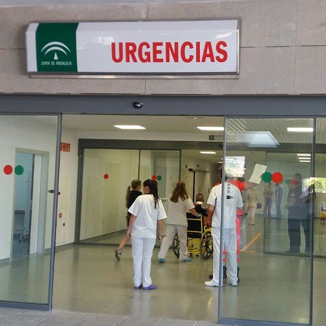
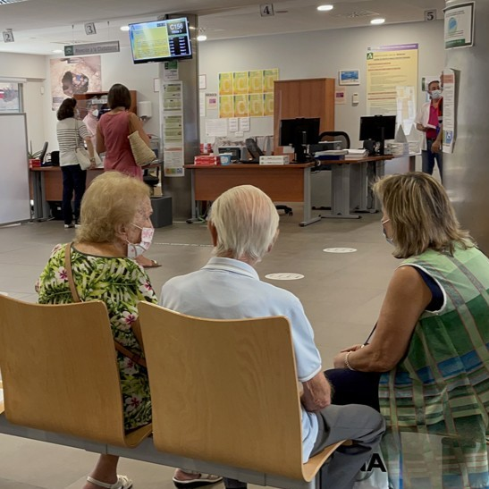

Inicio
El Hospital de Alta Resolución de Roquetas de Mar de la provincia de Almería tiene prevista su apertura para el año 2026. Su apertura se realizará por fases, una por año, hasta finalizar en el año 2028.
El hospital también recibe el nombre de 'Gabriel Amat'. El hospital contará con 53 habitaciones para hospitalizar a los pacientes, y con 23 consultas.
- Atención primaria
- Pediatría
- Urgencias
- Cirugía
Servicios

Urgencias
Pediatría
Cirugía

Atención primaria
Horario
| Día | Horario | |
|---|---|---|
| Lunes a Viernes | Mañana | 08:00 - 14:00 |
| Tarde | 16:00 - 20:00 | |
| Sábados | 09:00 - 14:00 | |